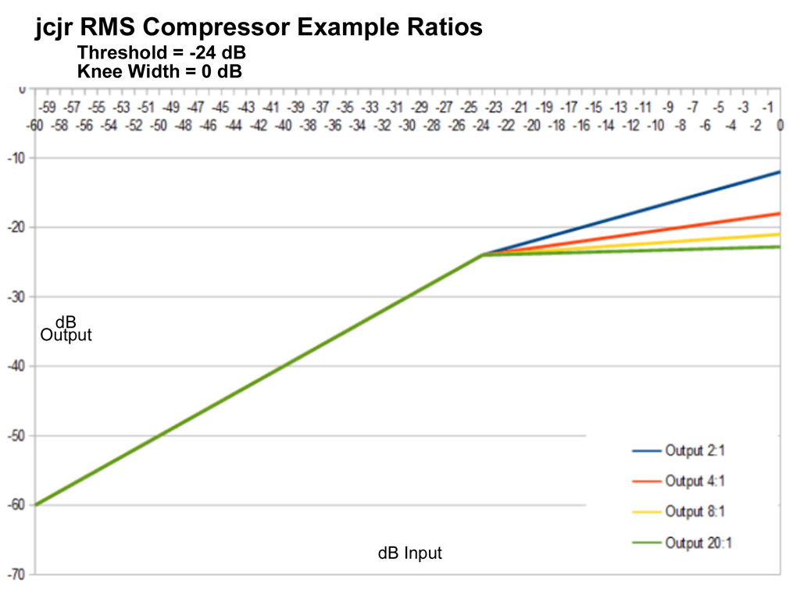
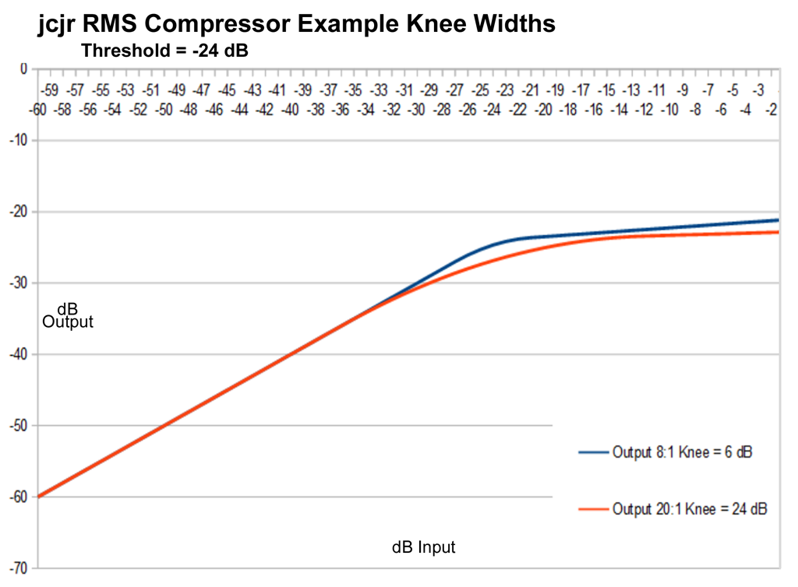
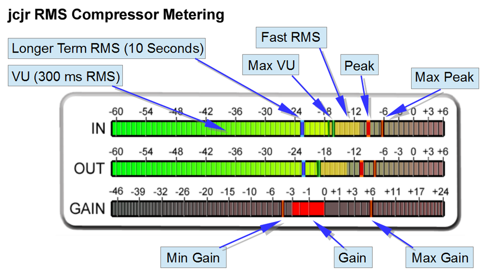
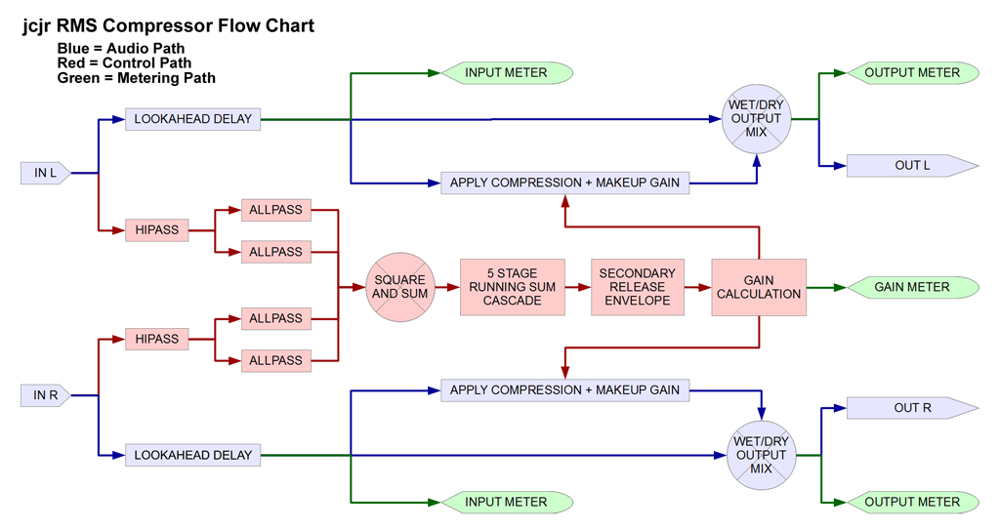
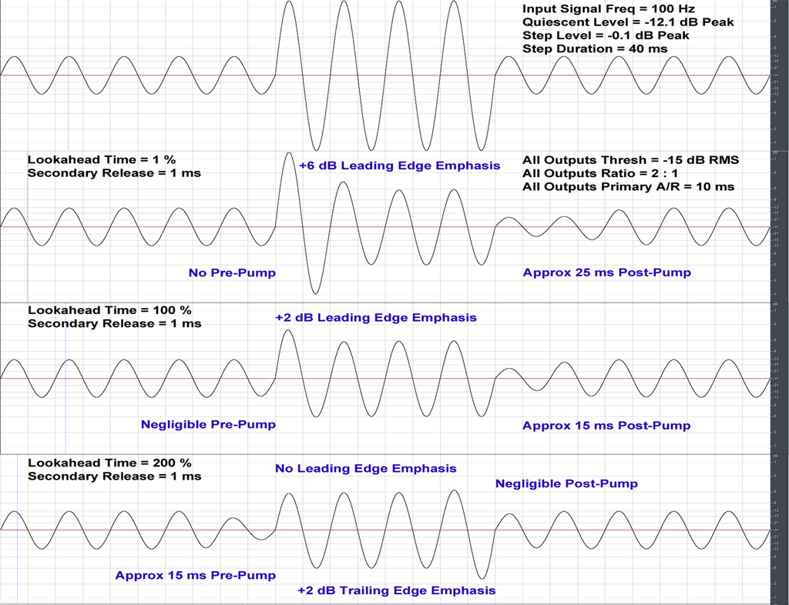
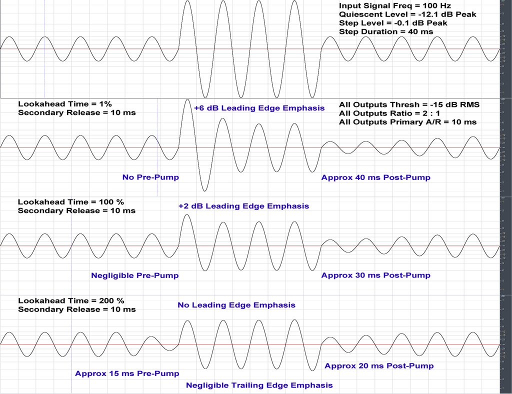

Copyright (C) 2016 and later James Chandler Jr
Contact: errnum@gmail.com
License: GPL - http://www.gnu.org/licenses/gpl.html
Version: 1.0
Lookahead vs Primary Envelope Interaction
RMSComp is a Reaper jsfx lookahead RMS compressor designed for low-distortion gentle “slow” compression rather than fast peak compression.
Some of my old songs needed Peak-to-Average Ratio reduced by about 4 dB. It seemed reasonable to try about 2 dB of transparent slow compression followed by 2 dB of transparent peak limiting.
After writing the RMS Compressor and Limiter plugins good enough to finish my old songs, I added more features though the focus remains on gentle low-distortion sculpting.
Stereo Link Mode
Range: RMS Sum of Left + Right, Maximum RMS of Left or Right
RMSComp uses always-on stereo linking. Which means that the amplitudes of both the Left and Right inputs are combined and smoothed as a mono gain envelope-- Then the mono gain envelope is applied equally to both the Left and Right outputs. It always has true stereo input and output, but equal amounts of compression gain change are always applied to both channels. Stereo linking is useful to help preserve the stereo image. If different compression gains are applied to the two channels, the stereo image can drift from side to side during playback, according to which of the input channels happens to be loudest at any moment.
The first option RMS Sum of Left + Right adds the levels of both Left and Right before calculating compression gain. In my opinion this is the more “idealized” or “pure” form of stereo-linked RMS compression. However, if there are sections of a song or track where one of the channels is remarkably louder than the other channel, the compression response could be “diluted”. For example if the Left input at some instant happens to be twice as loud as the Right input-- Then the average of the two envelope levels would be lower, and this lower average would compress less than if we were to compress according to the instantaneously loudest input channel.
The second option Maximum RMS of Left or Right always compresses against whichever input channel happens to be loudest at any instant. In the case of audio with a wide stereo image, where sometimes Left is louder than Right and other times Right is louder than Left-- Compressing against the greater of the two would have “stronger” compression and may better avoid “undesirably loud” peaks in the output.
Note that both modes work consistently even if the Left and Right input channels are strongly out-of-phase. The Left and Right sidechain inputs are processed independently up to a point where phase differences between Left and Right would no longer affect the compression result-- Only then are the two inputs combined and smoothed as a mono control envelope, applying equal gain to both outputs.
Lookahead
Range: 1 to 200 Percent of the Primary Attack / Release Time.
Lookahead delays the audio relative to the envelope smoothing, helping a “relatively slow” RMS envelope to respond appropriately. Lookahead is a percentage of the Primary Envelope Attack/Release time.
Examples:
* If Primary Envelope A/R time = 10 ms-- A Lookahead of 10 percent would delay the audio 1 millisecond behind the Envelope.
* If Primary Envelope A/R time = 50 ms-- A Lookahead of 10 percent would delay the audio 5 millisecond behind the Envelope.
* If Lookahead = 200 percent-- A Primary A/R time of 10 ms would have a 20 ms Lookahead.
* If Lookahead = 200 percent-- A Primary A/R time of 50 ms would have a 100 ms Lookahead.
Primary Attack/Release
Range: 10 to 50 milliseconds.
The Primary Envelope uses symmetrical Attack and Release. If Primary Attack is 20 ms then Primary Release would also be 20 ms. If Primary Attack is 50 ms then Primary Release would also be 50 ms. True RMS “ought to use” symmetrical Attack and Release.
The Primary Envelope has clean smoothing even at short time constants-- Even low bass has minimal audio-frequency envelope ripple. Audio-frequency envelope ripple causes audio-frequency intermodulation distortion. In my opinion IM distortion should be avoided.
Secondary Release
Range: 1 to 2000 milliseconds.
The Secondary Release section can further smooth the Primary Release. Though the Primary smoothing is good enough for minimal audio-frequency IM distortion, a too-fast envelope can cause choppy-sounding compression. Adjust the Primary Envelope for good leveling and then adjust the Secondary Release to minimize any short-term “nervous” pumping.
A very long Secondary Release is rarely necessary. I've had good results on mixes with Primary A/R set to 10 ms and Secondary Release set to 20 or 30 ms. Please do not automatically assume that large Secondary Release values are necessary for low distortion.
Though RMSComp was designed for modest compression, a too-long Release reduces the maximum possible dynamic range reduction. Even if RMSComp applies many dB of gain reduction-- If Release is so slow that gain only recovers a couple of dB in-between loud parts of the song-- Then regardless how savagely the compressor cuts gain you only get a maximum of a couple of dB dynamic range reduction.
For example, if Release is so long that the maximum gain reduction might be -22 dB but the minimum gain reduction is only -20 dB-- The result is only a 2 dB reduction in dynamic range! In that situation, the compressor might sound about the same with the gain meter twitching between -2 dB and 0 dB, rather than twitching between -22 dB and -20 dB. Large gain reduction does not necessarily mean that there will also be a large dynamic range reduction.
Some compressors have excessive envelope ripple and require long Release to minimize IM distortion. RMSComp's “low ripple” envelope smoothing only requires sufficient Secondary Release to control audible pumping.
Side Chain HiPass
Range: 10 to 1000 Hz.
The lowest 10 Hz highpass filtering minimally affects bass compression. Higher filter frequencies cause compression to be less-influenced by Bass. If a track's loud Bass excessively pumps Mid and High frequencies-- Gradually raise the Side Chain HiPass frequency to reduce the Bass pumping.
Comp Ratio
Range: 1.1 to 20.
Audio above threshold gets compressed at the given Ratio.
With a 1.5:1 ratio-- For every 1.5 dB above threshold input level, the output would rise by 1 dB.
With an 8:1 ratio-- The input must rise 8 dB above threshold in order to increase the output by 1 dB.
Bigger ratios have “stiffer” compression. Smaller ratios have “gentler” compression.

Threshold
Range: -48 dB to -1 dB.
Threshold is the input level at which compression begins. With a 4:1 ratio and threshold of -18 dB, there would be no compression below -18 dB input level. If input level rises to -12 dB, then the output level would rise: [6 dB Input above Threshold] / [A Ratio of 4] = 1.5 dB. The -18 dB threshold plus a 1.5 dB increase in output gives a total output level of -16.5 dB-- A gain reduction of -4.5 dB.
Knee Width
Range: 0 dB to 24 dB.
When Knee Width equals 0, RMSComp “instantly” applies the full Ratio when input level exceeds Threshold.
Non-zero Knee Width gradually increases compression up to the full compression ratio.
A 6 dB Knee Width would gradually begin compression at [Threshold minus 3 dB] and reach the full compression ratio at [Threshold plus 3 dB].
A 24 dB Knee Width would gradually begin compression at [Threshold minus 12 dB] and finally reach the full compression ratio at [Threshold plus 12 dB].

The
combination of a big Ratio with a wide Knee Width gives “compressor
limiter” behavior-- The Ratio begins small then gradually
reaches “almost brickwall” limiting.
Makeup Gain
Range: 0 dB to 24 dB.
RMSComp is a downward compressor-- Only above-Threshold audio is affected. To achieve compression, RMSComp attenuates loud signals. Add Makeup Gain if you wish to increase the output level.
For example, if RMSComp cuts the loudest parts of a track by -3 dB-- Then about +3 dB of Makeup Gain ought to make the output level about equal to the input level. First the compressor turns down the loudest parts of the song, and then the makeup gain raises the loudest parts back to the original input level. But the makeup gain also raises the level of the quiet parts of the song. The combination of compression plus makeup gain would keep the loud parts about the same while making the quiet parts louder.
Proper Makeup Gain depends on the nature of the audio and also depends on the compressor settings.
Wet / Dry Mix
Range: 0 to 100 Percent.
Wet / Dry Mix allows simple “parallel compression”. With Wet / Dry Mix at 100 percent, you only hear the compressed output. With Wet / Dry Mix at 0 percent, you only hear the uncompressed input. With Wet / Dry Mix at 50 percent, you hear an equal mix between uncompressed input and compressed output.
The Output Meter displays the Wet / Dry mixed output level. With Wet / Dry Mix at 0 percent, the input meter and output meter would display exactly the same levels. However, the Gain Reduction meter always displays compressed output gain. In other words, the Gain Reduction meter will display the same regardless of the current Wet / Dry Mix.
Makeup Gain is applied to the compressed output BEFORE Wet / Dry mixing. If you adjust Makeup Gain so that the input and compressed levels are about the same, then the output level will sound “about equally loud” regardless of the Mix control value.
One might adjust RMSComp for brutal “over the top” obnoxious pumping but only mix-in a small percent of the compressed output. Sometimes this might subtly and transparently fatten the track.

Meters
are auto-sized to fit the plugin window. A small-sized plugin window
shows a small meter. A big-sized plugin window shows a big meter. If
you want a bigger meter then drag the plugin window bigger.
Input / Output Meters
Peak: Instant peak hold, decaying about 1 dB per 100 ms.
Fast RMS: Instant RMS level with fast decay. This part of the meter is fast enough to flicker on-screen. Punchy audio with many transients would strongly flicker. Smooth audio with fewer transients would show minimal flicker.
VU RMS: VU meter ballistics-- Both the VU Attack and Release require about 300 ms to reach 99 percent of the RMS audio level.
Slow RMS: A slow indicator showing a 10 second average of the Audio Level.
Max Peak: This remembers the Maximum Peak encountered since the last RMSComp reset.
Max VU: This remembers the Maximum VU encountered since the last RMSComp reset.
Gain Meter
Gain: Positive Gain will draw a red bar from 0 dB (unity gain) UP TO the current Gain. Negative gain draws a red bar from 0 dB DOWN TO the current Gain. The gain meter scale is magnified in the vicinity of 0 dB so that the eye can better-judge small gain changes.
Max Gain: This remembers the Maximum Gain encountered since the last RMSComp reset.
Min Gain: This remembers the Minimum Gain encountered since the last RMSComp reset.

Audio
Path
The audio path is simple. Computed gain is applied to the delayed input to create the delayed compressed signal. Then the delayed compressed signal is mixed with the delayed un-compressed signal for the final output.
I usually set Wet / Dry mix at 100 percent, in which case none of the un-compressed signal appears at the output. At 100 percent, RMSComp mixes 100 percent of the compressed signal with 0 percent of the un-compressed signal so the result is the same as no mixer at all. Some people favor “parallel compression” and it was easy enough to add the Wet / Dry Mix feature in case some users may find it useful.
Control Path
RMSComp always uses “stereo link”. A single gain value is calculated based on the summed Left and Right levels. This single gain value is applied equally to both audio channels.
In order to “properly sum” the left and right inputs into a single usable envelope value, the first envelope processing steps must be performed in stereo.
HIPASS Filters: Audio Input is highpass filtered to implement the Sidechain Hipass feature. The highpass filters have minimal effect when set to the default 10 Hz cutoff. At the minimum tuning of 10 Hz, these first-order filters attenuate -3 dB at 10 Hz and attenuate less than -1 dB at 20 Hz. At the minimum tuning, the Hipass filters have minimal effect above 20 Hz and negligible effect above 40 Hz. Of course the Hipass filters have more effect on bass compression when set to higher frequencies.
ALLPASS Filters: The Allpass filter networks reduce low frequency envelope ripple. The initial version of RMSComp used a minimum Primary Attack/Release of 25 ms. At 25 ms or longer, the Primary smoothing had low ripple even at low bass frequencies. However, 25 ms is too slow for some applications. I wanted Primary Attack/Release adjustable as low as 10 ms. Low envelope ripple on low bass with only 10 ms of Primary Attack/Release is difficult to achieve.
The Allpass filter networks function as a “low frequency Hilbert transform”. A wideband Hilbert transform splits the input into two outputs. Hilbert outputs are 90 degrees out of phase at all frequencies. You get very low-ripple envelope smoothing when these two phase-shifted signals are squared and summed. At least it works great on pure sine wave inputs.
Wideband Hilbert transforms I tested had unacceptably large latency-- The minimum attack/release was too big. Wideband Hilbert excellently smoothed any frequency of sine wave but did not play nicely with complex waveforms. For example, square waves exhibited bad transient ripple.
At 10 ms A/R, the Primary Attack/Release envelope works pretty good at 100 Hz and delivers excellent performance above 200 Hz. Only the bass needs extra smoothing. Therefore the allpass network only 90-degree phase-shifts the bass. This short allpass network has less latency than a wideband Hilbert, and the extra ripple reduction is unnecessary except in low bass.
The allpass network DOES add a bit of bass latency. The actual minimum A/R at low bass is in the ballpark of 16 ms even if the Primary A/R is set to 10 ms. However, the allpass network has minimal effect on Attack/Release times except in the low bass
Running Sum Cascade: The Primary Attack/Release Envelope. Running sum is an efficient way to compute the average of many values, without having to laboriously add-up all the values for every new sample. Also called a boxcar FIR filter.
A single Running Sum can perfectly smooth some frequencies with less-perfect smoothing of other frequencies. The Running Sum mechanism and result has similarities to delay-based comb filters as found in chorus/flanger effects. Or the acoustic comb filters caused by wall reflections in a room.
Similar to a delay-based comb filter-- As input frequency increases, a single Running Sum has a repeating pattern of strong smoothing versus weak smoothing. The “lucky frequencies” get perfectly smoothed and the “unlucky frequencies” have less-perfect smoothing.
For example, if a given Running Sum length naturally has a “lowest perfect smoothing” frequency of 50 Hz-- Then all multiples of 50 Hz are perfectly smoothed-- 50 Hz, 100 Hz, 150 Hz, 200 Hz, etc. Significant smoothing occurs in-between the “perfectly smoothed” frequencies, but the in-between frequencies are not perfectly smoothed.
We can get “excellent smoothing” of all frequencies from a cascade of series-connected Running Sum smoothers. Each Running Sum in the cascade is set to a different sample length. The first Running Sum perfectly smooths some frequencies and does significant smoothing to the in-between frequencies.
A second Running Sum length is selected which “perfectly smooths” another series of frequencies which are located in-between the first stage “perfect frequencies”. The second stage improves smoothing of ALL of the first-stage frequencies. The second stage can't make any frequency of first stage smoothing worse, and the different tuning of the second stage improves smoothing at frequencies where the first stage didn't work so great.
In my tests, a cascade of five Running Sums gives VERY GOOD smoothing of all frequencies above some minimum frequency. The minimum frequency is determined by the Running Sum lengths.
Of course, two series Running Sums work better than a single Running Sum. Three Running Sums work better than two Running Sums. 21 Running Sums would surely work better than 20 Running Sums. However, the cascade of five Running Sums works good enough that perhaps bigger cascades would not make a compressor work noticeably better.
There seems an unavoidable tradeoff between low ripple versus fast envelopes The challenge is to get “as low ripple feasible” combined with “as fast envelope feasible”
Secondary Release: This is just a simple near-instant-attack, adjustable-release first-order IIR envelope smoother. The Primary Attack/Release cascade feeds thru the Secondary Release smoother, which has negligible effect on the Primary Attack times, but can lengthen the Primary Release to “smooth out” excessively choppy-sounding compression.
Input/Output Meters: The display is “mono” but does not meter the sum of both channels. Internally both the left and right are separately smoothed, but the meter displays the maximum level of Left or Right. If at one moment the left channel is loudest, the meter draws left channel amplitudes. If at some other moment the right channel is loudest, the meter draws the right channel amplitudes.
Smooth slow-attack compressors can exaggerate quick transients in the music. For instance drum hits or the loud sudden beginning of a vocal phrase. Sometimes this is good and sometimes not so much. Non-lookahead compressors with fairly slow attack can't really avoid it. A loud sound happens “instantly” but a slow envelope can't respond “instantly”. Therefore the beginning of a loud sound can “leak thru” the compressor before the slow envelope has sufficient time to cut the gain-- Boosting the beginning of each loud sound.
Imagine a track which is initially silent and then a loud sustained sound suddenly starts-- A steady sinewave test tone or an organ chord or whatever. Perhaps the loud sound plays for 2 seconds then suddenly stops, followed by silence afterwards. RMSComp's Primary Envelope will take one of its time constants to rise to within about -3 dB of the max RMS of this loud sound, finally reaching the full value of the loud sound after two of its time constants.
If the Primary Envelope A/R Time = 10 ms, then the Primary Envelope will take 10 ms to reach -3 dB of the max level and will reach the max level after 20 ms. When the loud sound stops, the Primary Envelope will fall about -3 dB below the max level within 10 ms, and fall all the way to zero after 20 ms.
If the Primary Envelope A/R Time = 50 ms, the Primary Envelope will take 50 ms to reach -3 dB of the max level and will reach the max level after 100 ms. When the loud sound stops, the Primary Envelope will fall about -3 dB below the max level within 50 ms, and fall all the way to zero after 100 ms.
So if Lookahead = 1 percent, the start of the loud sustained sound is not compressed. After 1 Time Constant the audio is “mostly compressed”, and after 2 time constants the loud sustained sound is “fully compressed”. The start of the loud sustained sound will punch louder before the compressor grabs. It takes 2 time constants to “completely grab”.
If Lookahead = 100 percent, the audio is delayed by one time constant. The start of the loud sustained sound is “mostly compressed”, and after 1 time constant it is “fully compressed”. It takes 1 time constant to “completely grab”. The start of the loud sustained sound punches a little louder before the compressor can “completely grab” but it doesn't punch as loud as with no Lookahead, and the compressor more-quickly reaches “full compression”.
If Lookahead = 200 percent, the audio is delayed by two time constants. The start of the loud sustained sound is “completely controlled” from the beginning and there is no extra “volume punch” at the start of the sound.
Therefore, when compressing smooth sustained audio such as vocals or sax, it MAY SOMETIMES be desirable to try Lookahead values in the range of 100 to 200 percent.
The biggest problem I've observed with Lookahead greater than 100 percent-- The gain change can over-anticipate loud peaks, causing obvious “pre-pumping” before each loud note. On the other hand, radical “pre-pumping” might occasionally be an interesting special effect.
The above example of “loud sustained sounds” is only one way to look at it. Many transients are fairly short in mixes or drum tracks or bass tracks or whatever. The transient of an electric bass slap or a kick drum hit is so fast that it is senseless to worry about the “sustained max level”. I suspect that the most “transparent” handling of music with short transients might benefit from a Lookahead in the ballpark of 100 percent. That way the “max gain reduction” in response to a transient, would happen when the transient is “halfway thru” the Primary Envelope. Each gain reduction peak gets centered on the transient peak which caused the gain reduction. Fairly smooth overall compression without exaggerating the transients.
Of course if you want to “punch up” a mix by exaggerating the transients, use Lookahead in the ballpart of 1 to 100 Percent. Listen to a mix while tweaking the Lookahead slider and easily hear the effect. At low values of Lookahead the transients are obviously exaggerated, and then as you gradually increase the Lookahead Percent, the transients become less-exaggerated. At some point above 100 percent, you may notice excessive “pre-pumping”.
This is also affected by the Primary Envelope Attack/Release time. If the Primary A/R = 10 ms, a short lookahead causes “quick blips” of exaggerated transients. As you increase the Primary A/R toward 50 ms, a short lookahead causes “longer blips” of exaggerated transients.
Here are test signal plots demonstrating Lookahead vs Attack/Release interaction. The test signal is a 100 Hz sine wave. Each sine wave period has 10 ms duration. The “steady state” test signal level is -12.1 dB Peak, and a volume-boosted step rises to -0.1 dB for 40 ms, four 100 Hz wave periods. This short duration is slightly longer than a musical 64th note at a tempo of 120 Beats Per Minute.
This brief blip of a note is +12 dB louder than the steady-state level. RMSComp is adjusted with a threshold of -15 dB and a ratio of 2:1. -15 dB RMS is the same as -12 dB Peak, so the steady-state regions of the signal are right on the edge of the compression threshold. A “perfect” instant compressor at 2:1 ratio would output the compressed brief loud +12 dB input step at -6 dB Peak.
Note that the test signal is not completely band-limited. The waveform slope suddenly changes at the beginning and the end of the short loud step. Because of the sudden slope changes, the ear would tend to hear a quiet click at the beginning and the end of the test signal's loud short step. Therefore the ear would also hear a click in the compressed output. Viewed with spectral analysis, there would be a brief “splatter” of harmonics at the beginning and end of the short loud step, in both the test input signal and the compressed output. That is not the point of this illustration. It is difficult to accurately measure transient distortion on brief step test signals. This example would not be a good test waveform for the measurement of transient distortion.
In the first illustration, all three example outputs have a Primary Attack/Release of 10 ms and the shortest possible 1 ms Secondary release. Lookahead time is the only difference. The first plot with minimal lookahead shows no pre-pumping and allows a +6 dB overshoot to leak thru the compressor before the A/R envelope can catch up. The second plot with 100 Percent (10 ms) lookahead shows very slight pre-pumping, only a +2 dB overshoot, and shorter-duration post-pumping. The third plot with 200 percent (20 ms) lookahead has more pre-pumping, no leading edge overshoot, about +2 dB of trailing edge overshoot, and minimal post-pumping.
On typical music signals, in my opinion trailing edge overshoots would not often be a problem. Music notes tend to have gradual endings and more-sudden beginnings-- Which would minimize the importance of trailing-edge overshoots. The “sudden termination” of our artificial test signal emphasizes this artifact.

The second illustration uses settings identical to the first, except we have added 10 ms of Secondary Release. The Attack is still 10 ms, but the combined release of Primary and Secondary envelopes is longer at about 20 ms.
Short Lookahead has similar response except the post-pumping is a little longer. Medium Lookahead is also about the same except for slightly longer post-pumping. With long Lookahead, the slightly longer release tends to eliminate the trailing-edge overshoot along with “not very much” post-pumping.

Music I have tested seemed more-kindly-treated by Lookahead values not much bigger than 100 percent. Perhaps there are special FX or types of tracks not yet tested, where large Lookahead values might be found more useful.
The interaction between Lookahead and Attack/Release would show similar results at Attack/Release times longer than the minimum 10 ms, except the results would have a longer time-scale.
Except for modest amounts of low-ratio compression, you will probably discover that compressed music sounds smoother with the Secondary Release adjusted somewhat longer than the 1 or 10 ms shown in the test plots. I only wanted to show the difference between a small amount of Secondary Release versus none at all.
As earlier noted, I have only used RMSComp for gentle mix leveling. I think it did a pretty good job at that. I do not know what other things RMSComp might be good for. Maybe a lot, or maybe not much.
After having “increased the flexibility” RMSComp MAY be good for other tasks. Possibly good for low-distortion “a couple of dB” glue compression on a master bus. Possibly good for leveling individual tracks. If you have either success or failure with specific applications please let me know and I'll see about adding your findings to the documentation.
My use for gentle mix leveling-- I would feed the mix into RMSComp and then feed the RMSComp output into a Limiter which I'll eventually polish enough to publish.
I used Primary Attack / Release of about 25 ms with a 100 percent lookahead. Secondary Release was set around 50 to 100 ms. I used a Ratio of 1.3 or 1.4, adjusting the Threshold low enough to achieve about 2 dB of overall dynamic range reduction. This requires Threshold to be set rather low, because the gain reduction is so gradual. This seemed to “gently level” the audio without adding obvious pumping, distortion or transient-mangling.
After having adding more flexibility to the controls in this “release version”, perhaps I would better-prefer alternate settings for Attack / Release or other parameters in this current RMSComp version-- Settings which were not possible in the first versions. However, for “gentle leveling” of a mix prior to limiting, I would probably still use fairly low ratios. Ratio less than 2 and probably less than 1.5.
You might like using RMSComp in some completely different fashion.
Download RMSComp from http://www.errnum.com
If you do not know how to install jsfx plugins into Reaper then here is an excellent instructional video-- How To Install JS Plugins Video
First unzip jcjrRMSComp.zip yielding the un-compressed folder jcjrRMSComp.
Open the jcjrRMSComp folder to find a jcjr folder inside.
Contents of the jcjrRMSComp/jcjr folder--
a) jcjr_RMSComp : The jsfx effects code.
b) RMS_Comp_Meter_BG.png : Image needed for RMSComp meters.
c) RMS_Comp_Meter_FG.png : Image needed for RMSComp meters.
d) RMS_Comp_Meter_PK.png : Image needed for RMSComp meters.
e) RMS_Comp_Meter_SLO.png : Image needed for RMSComp meters.
f) jcjrRMSComp/jcjr/jcjrRMSCompManual folder : Contains jcjrRMSCompManual.html plus graphics files required by the manual.
If you do not already have a folder titled jcjr in your Reaper effects folder, then copy the jcjrRMSComp/jcjr folder into your Reaper effects folder.
Otherwise, if your Reaper effects folder already contains a jcjr folder, then copy the entire contents of your new-downloaded jcjrRMSComp/jcjr folder into Reaper's REAPER/Effects/jcjr folder. This will add the new RMSComp files to any plugins already installed in the REAPER/Effects/jcjr folder.